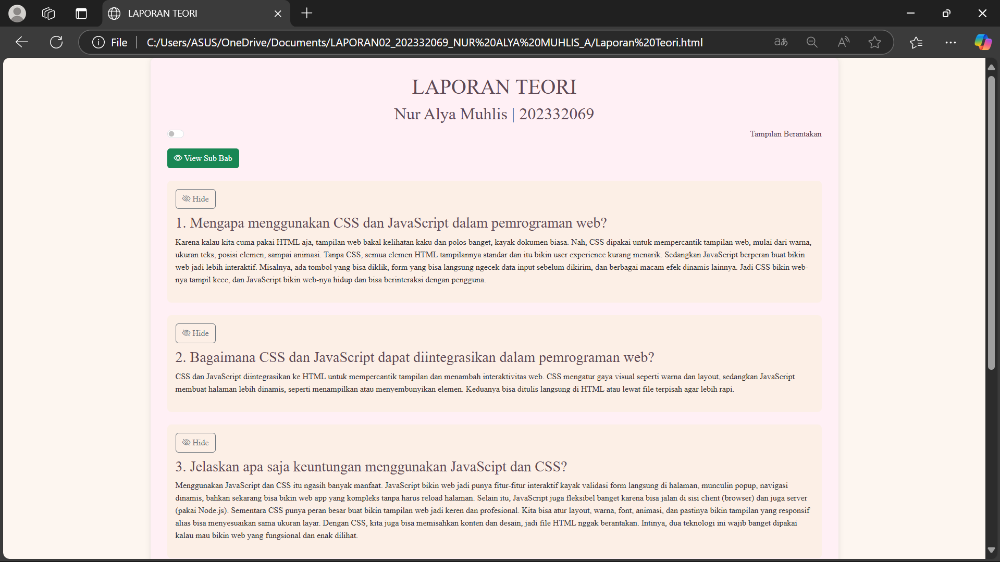

Karena kalau kita cuma pakai HTML aja, tampilan web bakal kelihatan kaku dan polos banget, kayak dokumen biasa. Nah, CSS dipakai untuk mempercantik tampilan web, mulai dari warna, ukuran teks, posisi elemen, sampai animasi. Tanpa CSS, semua elemen HTML tampilannya standar dan itu bikin user experience kurang menarik. Sedangkan JavaScript berperan buat bikin web jadi lebih interaktif. Misalnya, ada tombol yang bisa diklik, form yang bisa langsung ngecek data input sebelum dikirim, dan berbagai macam efek dinamis lainnya. Jadi CSS bikin web-nya tampil kece, dan JavaScript bikin web-nya hidup dan bisa berinteraksi dengan pengguna.
CSS dan JavaScript diintegrasikan ke HTML untuk mempercantik tampilan dan menambah interaktivitas web. CSS mengatur gaya visual seperti warna dan layout, sedangkan JavaScript membuat halaman lebih dinamis, seperti menampilkan atau menyembunyikan elemen. Keduanya bisa ditulis langsung di HTML atau lewat file terpisah agar lebih rapi.
Menggunakan JavaScript dan CSS itu ngasih banyak manfaat. JavaScript bikin web jadi punya fitur-fitur interaktif kayak validasi form langsung di halaman, munculin popup, navigasi dinamis, bahkan sekarang bisa bikin web app yang kompleks tanpa harus reload halaman. Selain itu, JavaScript juga fleksibel banget karena bisa jalan di sisi client (browser) dan juga server (pakai Node.js). Sementara CSS punya peran besar buat bikin tampilan web jadi keren dan profesional. Kita bisa atur layout, warna, font, animasi, dan pastinya bikin tampilan yang responsif alias bisa menyesuaikan sama ukuran layar. Dengan CSS, kita juga bisa memisahkan konten dan desain, jadi file HTML nggak berantakan. Intinya, dua teknologi ini wajib banget dipakai kalau mau bikin web yang fungsional dan enak dilihat.
Keuntungan pakai Bootstrap itu banyak banget, terutama buat kamu yang pengen bikin tampilan web cepat, rapi, dan responsif tanpa harus ngoding dari nol. Bootstrap udah nyediain kumpulan komponen siap pakai kayak tombol, form, navbar, dan grid layout yang tinggal pakai aja. Selain itu, tampilannya udah otomatis ngikutin ukuran layar, jadi webnya tetap bagus di HP, tablet, atau laptop. Jadi lebih cepat, efisien, dan tampilannya juga enak dilihat.
Berikut contoh tampilannya:
